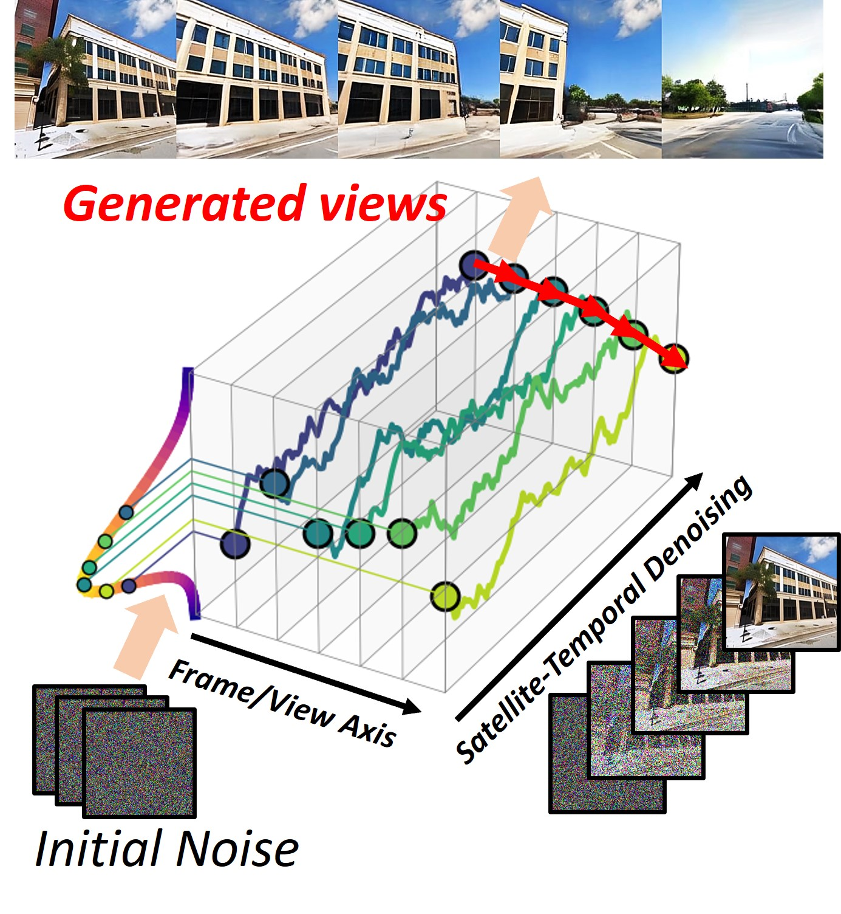
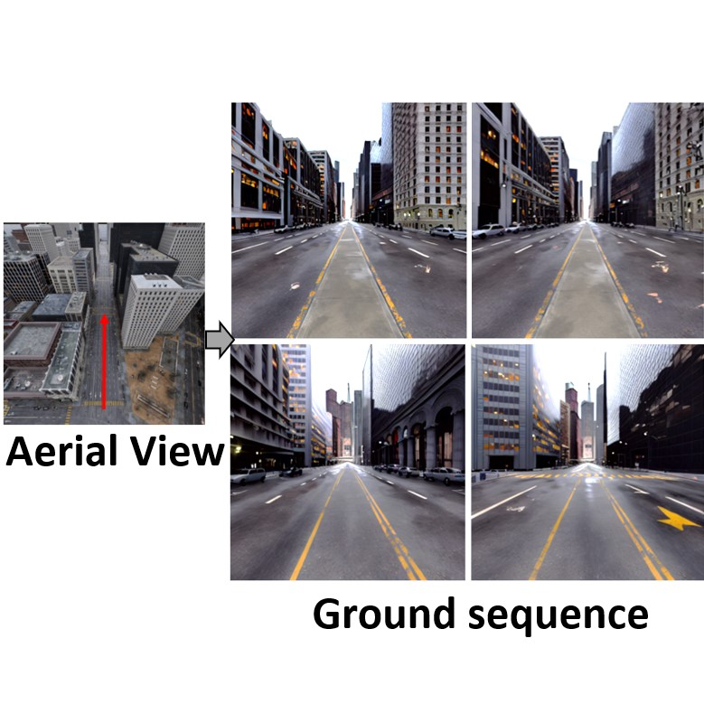
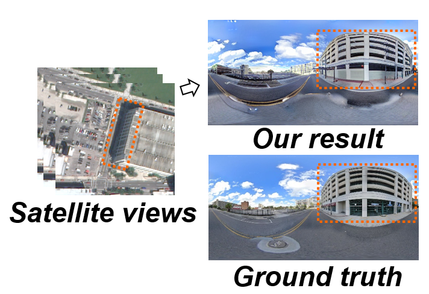

|
Ningli Xu I'm a 5th year Ph.D. student at The Ohio State University working with Rongjun Qin in Columbus, Ohio. During my Ph.D. period, I worked on 3D reconstruction of multi-source data including satellite, aerial, UAV, ground-view images; 3D registration of cross-view/cross-source data; View synthesis & generation of ground views from aerial & satellite views. Email / Scholar / ResearchGate / Github / Linkedin |

|
PublicationsMost my works are related to: Computer vision, Generative AI, Diffusion, NeRF, Guassian Splatting. Some works are highlighted. |
|

|
Satellite to GroundScape - Large-scale Consistent Ground View Generation from Satellite Views
Ningli Xu, Rongjun Qin CVPR 2025 (2878/13008, top 22.1%) arxiv | project page Sat2groundscape is a framework that transforms satellite imagery into realistic street view sequences using diffusion models, and a constrained optimization strategy to enhance cross-view synthesis quality. |
|

|
Skyeyes: Ground Roaming using Aerial View Images
Zhiyuan Gao*, Wenbin Teng*, Gonglin Chen, Jinsen Wu, Ningli Xu, Rongjun Qin, Andrew Feng, Yajie Zhao WACV 2025 arxiv | project page SkyEyes is a framework that transforms aerial imagery into realistic street view sequences using 3D Gaussian Splatting, diffusion models, and a constrained optimization strategy to enhance cross-view synthesis quality. |
|

|
Geospecific View Generation -- Geometry-Context Aware High-resolution Ground View Inference from Satellite Views
Ningli Xu, Rongjun Qin ECCV 2024 (Oral Presentation, 200/8585, top 2.3%) paper | dataset | project page | Invited talk at Voxel51 The first work applying diffusion-based method to tackle satellite-to-ground view generation task. It performs ground-view synthesis conditioning on the weak building facades information from satellite images. |

|
Large-scale DSM registration via motion averaging
Ningli Xu, Rongjun Qin ISPRS Annals of the Photogrammetry, Remote Sensing and Spatial Information Sciences, 2024 Best Paper Award (1/229) paper | slides Want ICP (iterative closes point) be applied to terrain-scale DSMs (digital surface model) and even multiple noisy DSMs? Check out the proposed DSM-ICP, which applies a fast and exact nearest neighbor search method leveraging the grid structure of DSM. |

|
Multi-tiling neural radiance field (NeRF)—geometric assessment on large-scale aerial datasets
Ningli Xu, Rongjun Qin, Debao Huang, Fabio Remondino The Photogrammetric Record , 2024 (Cover article of 12/2024 issue) paper | video | code NeRF vs Multi-view stereo? We propose multi-camera tiling technique to enable NeRF on large-scale aerial datasets and further conduct experiment to compare their geometry reconstruction performance. |

|
Point cloud registration for LiDAR and photogrammetric data: A critical synthesis and performance analysis on classic and deep learning algorithms
Ningli Xu, Rongjun Qin,Shuang Song ISPRS Open Journal of Photogrammetry and Remote Sensing , 2023 paper | awesome-registration-papers Review and evaluation experiment of feature-based and ICP-based registration methods on photogrammetry and LiDAR data. |

|
A volumetric change detection framework using UAV oblique photogrammetry – a case study of ultra-high-resolution monitoring of progressive building collapse
Ningli Xu, Debao Huang, Shuang Song, Xiao Ling, Chris Strasbaugh, Alper Yilmaz, Halil Sezen, Rongjun Qin International Journal of Digital Earth , 2021 paper | video Monitoring of progressive building collapse using photogrammetry technique. |
{kind=link}
Honors and Awards
|
Academic ActivityInvitied Talks
Reviewer:
|
|
Last updated: 05/16/2024 |